- 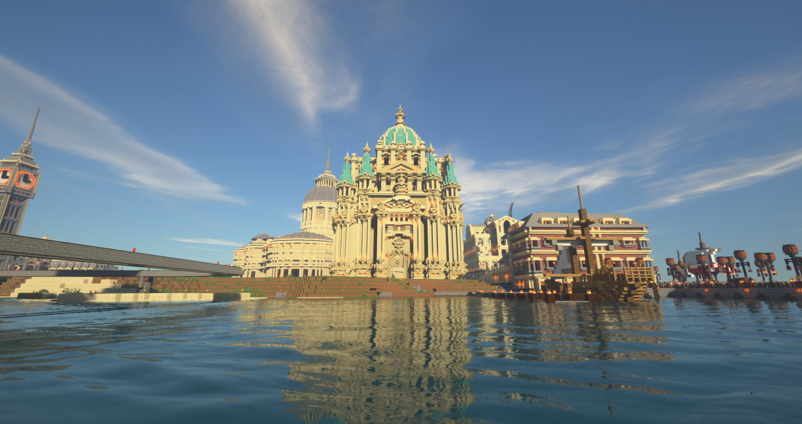
- 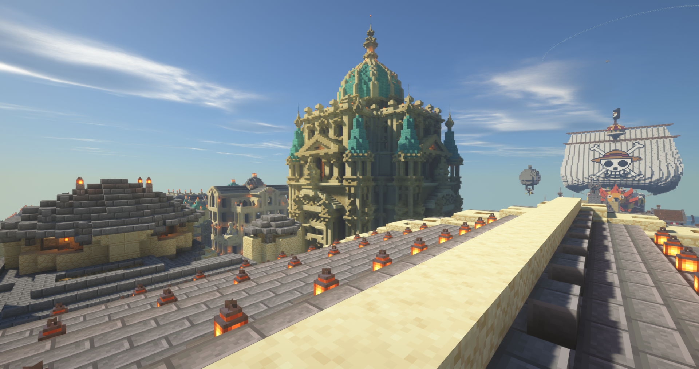
-

黎明堡
坐落在勇者村海邊的大型建築
一個原創的英式建築
上邊的藍綠色圓頂搭配底下的乳白色牆
讓人有一種純淨素雅、清新脫俗的感覺
負責人：蘇蘇
聖希娜城
透過頻繁的貿易往來
勇者村與彩蛋鎮逐漸交好
與之簽署了貿易協定後
更修築了連接兩地，象徵和平的皇豆橋
而聖希娜城作為往返勇者村與彩蛋鎮的交通要衝
也順勢藉此蓬勃發展了起來
負責人：白豹、斑馬
-

-

-

-

- 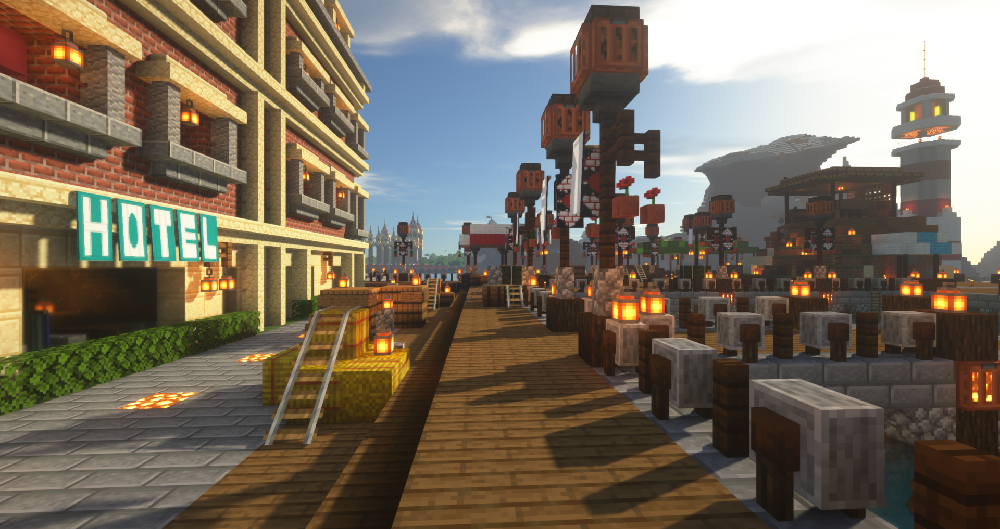
-

-

- 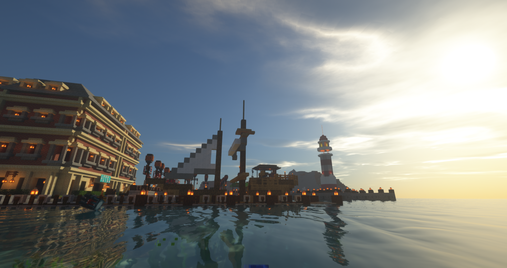
- 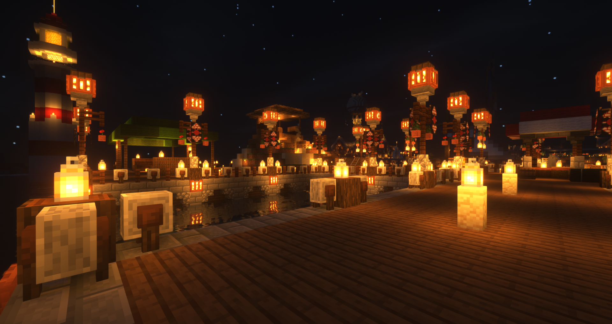
- 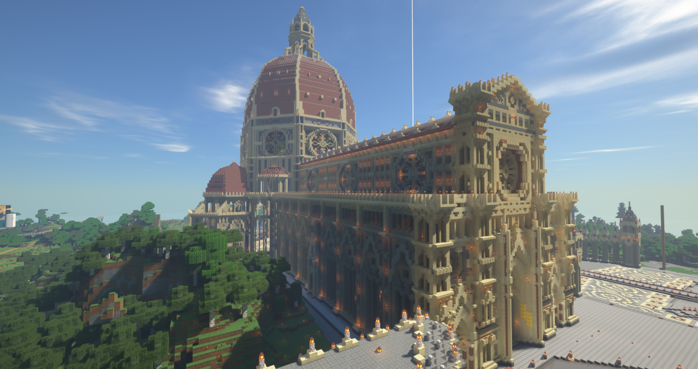
-

- 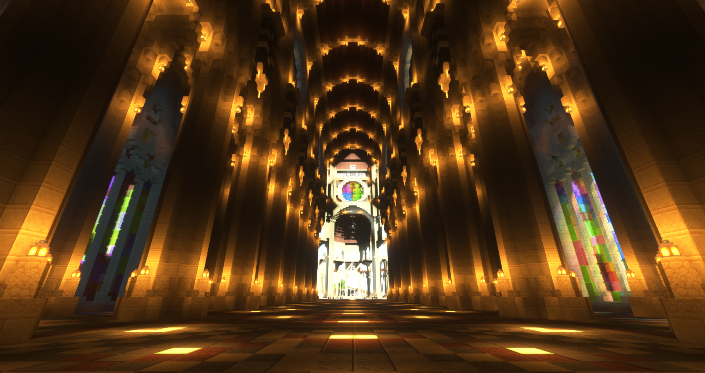
新議會
隨著村落的發展，舊議會逐漸不堪使用
因此參考了聖母百花教堂的設計
在新城區重新設計了一座更寬廣更宏偉的議會
紅白搭配的原創建築外觀，加上附近的雅典娜雕像
剛好給人莊重嚴肅的風格
裡面的彩色玻璃裝飾，增添了內部只有白色建築的單調
負責人：白豹、HETZER
雅典娜
負責人：暗帝
劍橋大學
勇者村的龐大建築之一
教堂給人高雅乾淨的感覺
裡面的圖書館讓勇者們閱讀知識與歷史
內容包括很多小豆粉絲的名字
負責人：暗帝
- 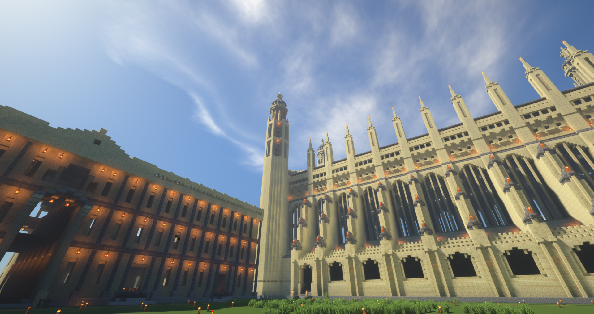
-

- 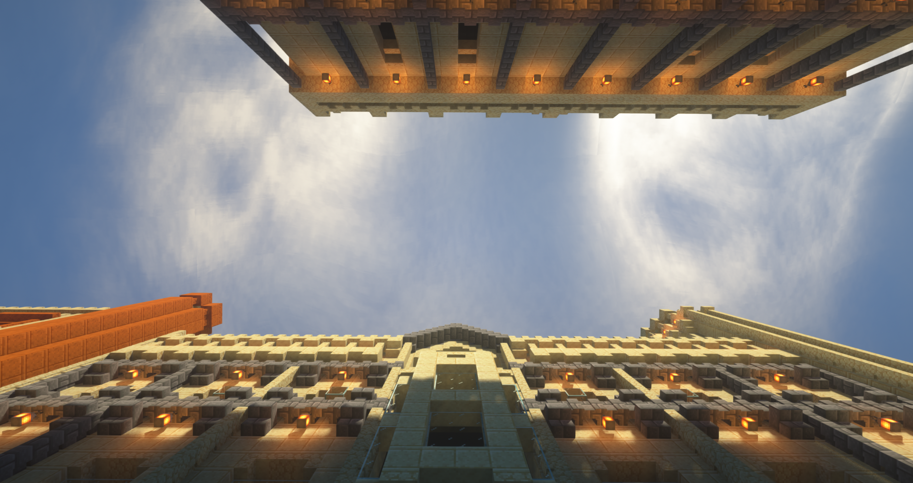
- 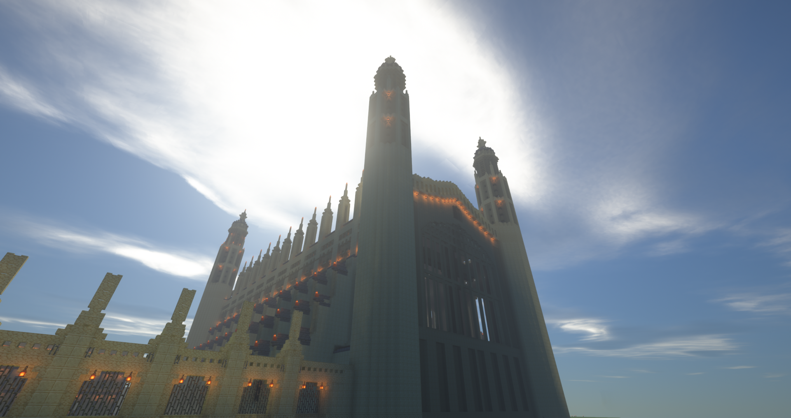
- 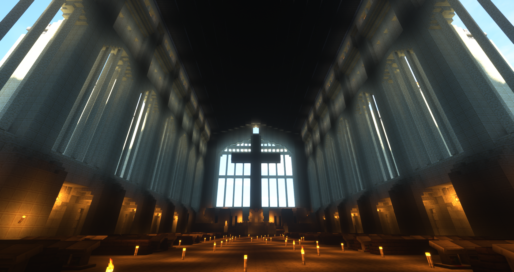
- 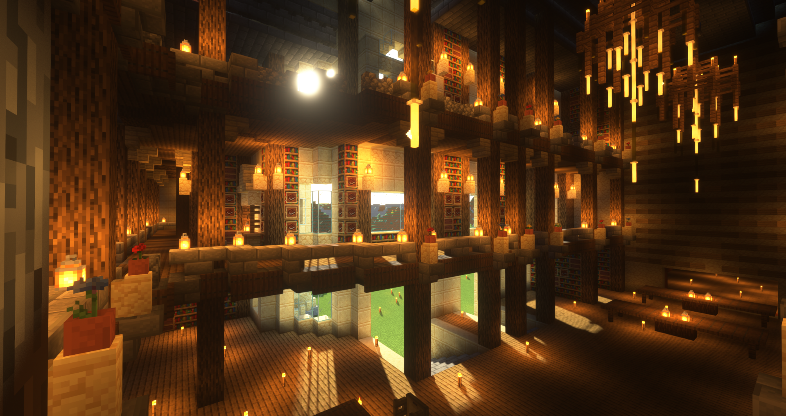
-

-

- 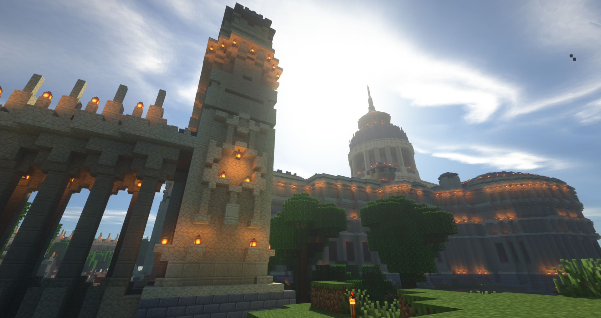
-

- 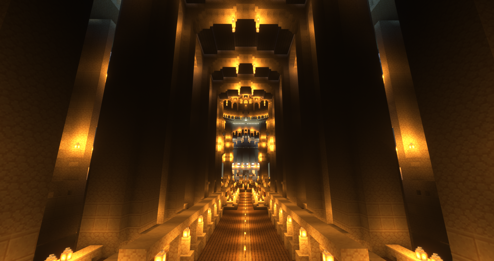
- 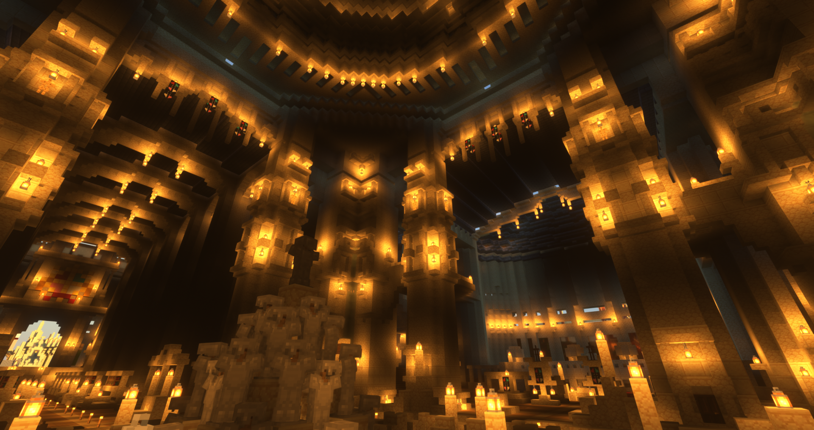
聖伯多祿大殿
參考了聖彼得大教堂的設計
做為勇者村巨大建築之一
金碧輝煌的歐式建築為勇者村增加了一股新的風格
高聳入雲的教堂外表，卻包含著莊重嚴肅的內飾
負責人：暗帝
獸人村
隨著勇者村的發展
原本在大陸上橫行的魔物已被消滅殆盡
而少數擁有智慧，願意跟人類和平相處的魔物
與勇者村簽署了和平協議
並在主鎮旁建立了一座獸人村落
經過長年的頻繁交流後，生活習慣已與人類無異
負責人：白豹
- 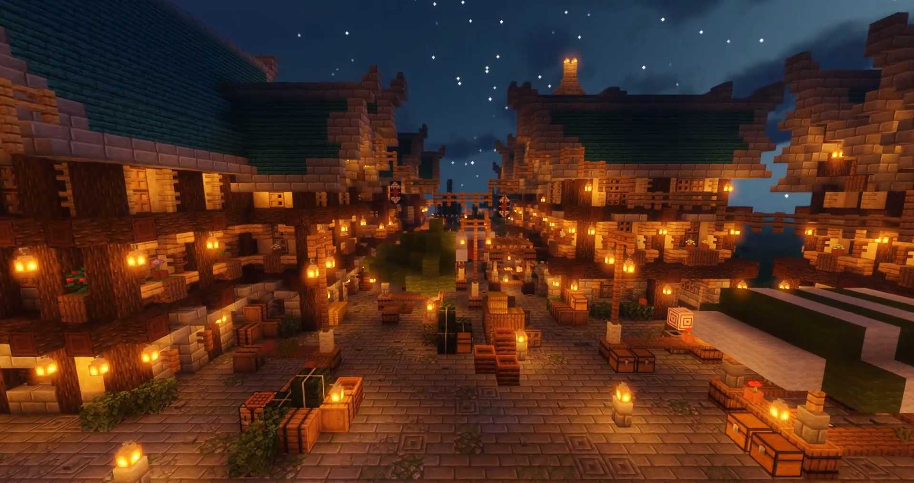
-

- 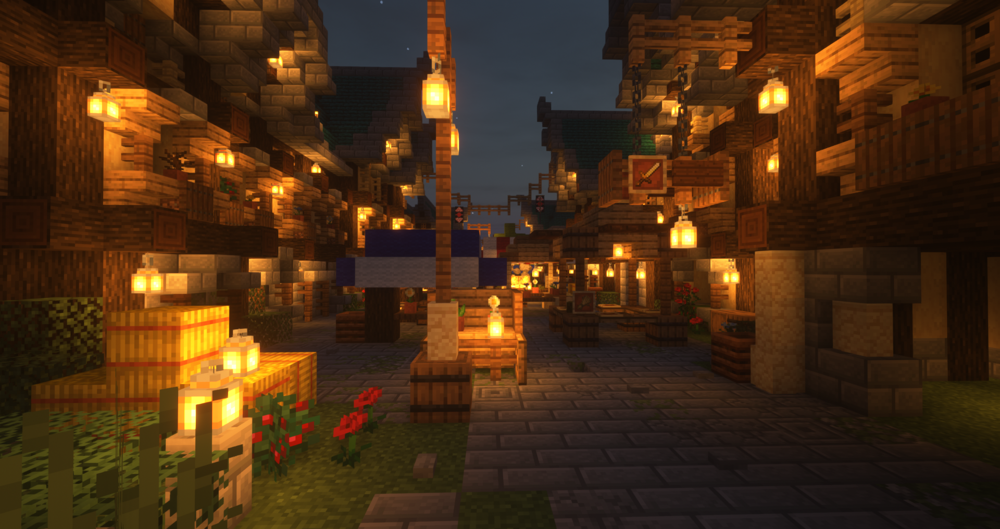
-

皇豆橋
負責人：白豹、村長

DC村大使館
與DC村建交後
各樣政治、商業、學術等交流日益頻繁
為了照顧遠在DC村工作和旅遊的勇者村居民
勇者村向DC村申請了一塊空地
設立了駐外大使館
除了辦理外交事務，內部還設有溫泉及旅館等娛樂設施
負責人：白豹
花寧潭
傳說在遠古時期，早在勇者們踏入這片大陸前
滿山遍野的魔物無止境的湧出，肆虐著其上的居民們
但唯有這座潭，沒有一隻魔物敢靠近
看似是潭中那棵聳入雲霄的大櫻花樹，在庇護著人們
由於此地總是百花盛開的奇景，與遠離魔物侵擾的清寧
因而被稱為「花寧潭」
負責人：艾謐灰、蘇蘇、肉圓

音樂走廊
由主鎮通往四鎮姬路城的鐵路，是勇者村最長的一條路
綿延數里，將近二十分鐘的路程
為了增添趣味性，不讓乘客無聊
在鐵路邊設置了音響系統
各式各樣悅耳的音樂，將會在列車駛過的同時響起
負責人：村長、Kano